Tallinn: mapa povrchů města, A/B: bez mapy (nahoře, modře) a s mapou povrchů Tallinnu (dole, červeně)
Řez zleva (A) doprava (B), ±10 m podél ulice, 10 px = 1 m. Silné čáry = okraje vozovky, tenké = ostatní hranice, žlutá = střed řezu, * = odhad.Ortofoto © Maa- ja Ruumiamet (otevřená licence).
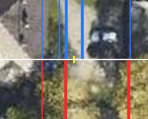
tl1 · (bez názvu) (tallinn)
bez mapy: zelen 2.9* · plocha 1.05* · obsluzna 2.75* · plocha 8.05*
s mapou Tallinnu: zelen 3.9 · parkovani 10.6
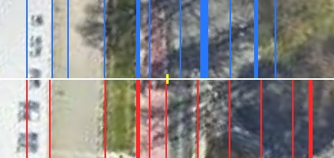
tl3 · 8 (tallinn)
bez mapy: plocha 3.2* · chodnik 2* · plocha 4.65* · zelen 4.15* · cyklopruh 1.5 · pruh 3.97 · pruh 2.67 · delici 0.45* · pruh 3.15 · pruh 3.15 · plocha 2.5*
s mapou Tallinnu: plocha 2.95* · chodnik 6.95 · zelen 4.1* · cyklopruh 1.5 · krajnice 2.15* · pruh 4 · pruh 4 · pruh 4 · pruh 4 · krajnice 2.15*
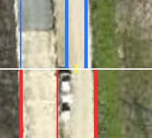
tl4 · (bez názvu) (tallinn)
bez mapy: plocha 6.65* · obsluzna 2.75*
s mapou Tallinnu: parkovani 5.25 · obsluzna 5.55
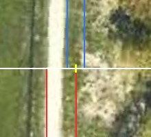
tl6 · (bez názvu) (tallinn)
bez mapy: cyklostezka 2.5*
s mapou Tallinnu: chodnik 4.3
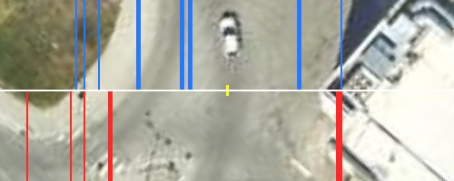
tl8 · (bez názvu) (tallinn)
bez mapy: stromorad 0.88 · chodnik 1.62* · zelen 4.3* · obsluzna 4.8* · plocha 0.95* · obsluzna 11.95* · chodnik 4.7*
s mapou Tallinnu: zelen 4.82 · stromorad 1.43 · chodnik 2.82 · obsluzna 25.15 · chodnik 0.35*
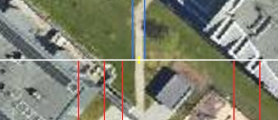
tl9 · (bez názvu) (tallinn)
bez mapy: chodnik 2*
s mapou Tallinnu: zelen 4.29 · stromorad 3 · zelen 18.56 · chodnik 4.25*
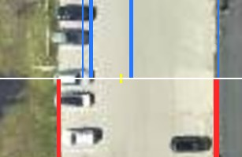
tl13 · (bez názvu) (tallinn)
bez mapy: plocha 1.05* · obsluzna 5.1* · plocha 11.05*
s mapou Tallinnu: obsluzna 19.95 · chodnik 0.35*
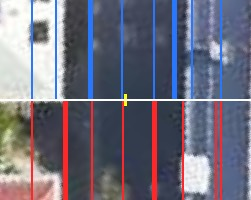
tl16 · Kauka (tallinn)
bez mapy: plocha 2.41* · chodnik 3.4* · pruh 3.2 · pruh 3.2 · parkovani 2* · chodnik 1.8* · plocha 2.85*
s mapou Tallinnu: chodnik 3.35 · parkovani 2.65 · pruh 3.12 · pruh 3.12 · chodnik 2.85 · zelen 3.35 · plocha 0.45*
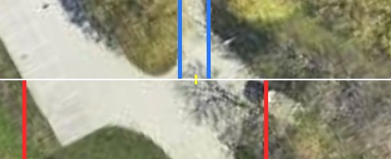
tl17 · (bez názvu) (tallinn)
bez mapy: obsluzna 3.6*
s mapou Tallinnu: parkovani 30.3
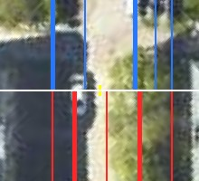
tl20 · Leigeri (tallinn)
bez mapy: pruh 3.53 · pruh 5.53 · zelen 2.3* · chodnik 1.83*
s mapou Tallinnu: zelen 2.41 · pruh 3.6 · pruh 3.6 · zelen 3.58
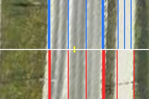
tl22 · Tehnika (tallinn)
bez mapy: pruh 3.87 · pruh 3.6 · pruh 3.33 · zelen 3.1* · cyklostezka 1.3* · cyklostezka 1.3*
s mapou Tallinnu: pruh 3.81 · pruh 3.6 · pruh 3.3 · krajnice 0.18 · zelen 2.7 · stezka_sdilena 3.4
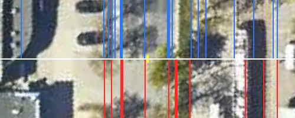
tl23 · Kopli (tallinn)
bez mapy: plocha 13.98* · stromorad 0.77 · zelen 0.6* · plocha 0.5* · chodnik 1* · pruh 4 · pruh 4 · zelen 0.75* · stromorad 3.15* · cyklostezka 1.25* · cyklostezka 1.25* · plocha 4.82* · tramvaj 3.3 · tramvaj 3.3 · plocha 0.71*
s mapou Tallinnu: stromorad 1.2 · chodnik 1.7 · pruh 4 · pruh 4 · krajnice 1.15* · stromorad 2.45 · stezka_sdilena 9.4 · tramvaj 3.1 · chodnik 2.28
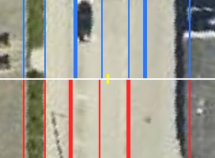
tl24 · Spordi (tallinn)
bez mapy: zelen 2.7* · chodnik 3.8* · pruh 3.4 · pruh 3.4 · parkovani 2* · chodnik 5.7*
s mapou Tallinnu: zelen 2.7 · chodnik 3.2 · pruh 3.67 · pruh 3.67 · chodnik 7.75
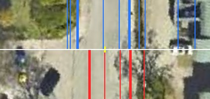
tl26 · Magasini (tallinn)
bez mapy: plocha 0.58* · chodnik_kola 1.4* · pruh 5.2 · pruh 3.2 · parkovani 2* · chodnik 2* · zelen 1.2* · plocha 6.55* · zelen 3.4*
s mapou Tallinnu: pruh 3.07 · pruh 3.07 · parkovani 2* · chodnik 2.8
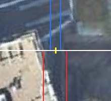
tl28 · (bez názvu) (tallinn)
bez mapy: chodnik 2*
s mapou Tallinnu: chodnik 4.65
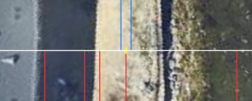
tl31 · (bez názvu) (tallinn)
bez mapy: chodnik 2*
s mapou Tallinnu: zelen 7.85 · chodnik 3.05 · plocha 5.15* · nezname 22.02*
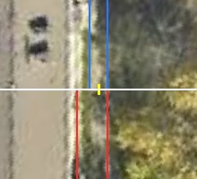
tl32 · (bez názvu) (tallinn)
bez mapy: chodnik 2*
s mapou Tallinnu: chodnik 3.4
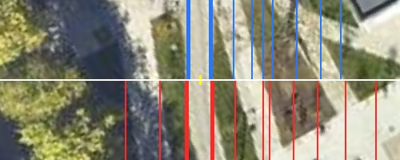
tl33 · Vana-Kalamaja (tallinn)
bez mapy: pruh 2.8 · stromorad 2.9* · cyklostezka 2.3* · chodnik 1.4* · zelen 1.25* · stromorad 3* · stromorad 3* · chodnik 2.5*
s mapou Tallinnu: chodnik 4.25 · stromorad 3.35 · pruh 3.15 · stromorad 2.9 · chodnik 3.55 · zelen 0.8 · stromorad 3 · stromorad 3 · chodnik 3.45 · zelen 3.83
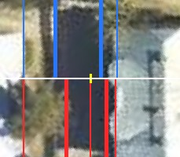
tl34 · Videviku (tallinn)
bez mapy: zelen 3.95* · pruh 5.8 · plocha 2.15*
s mapou Tallinnu: chodnik 5.4 · pruh 3.1 · parkovani 2* · chodnik 1.15
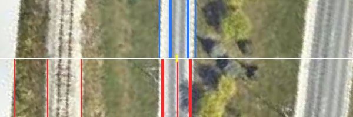
tl36 · (bez názvu) (tallinn)
bez mapy: plocha 1.8* · pruh 3 · nezname 1.35*
s mapou Tallinnu: zelen 5.55* · chodnik 5.7* · zelen 13.85 · pruh 2.62 · krajnice 2.03
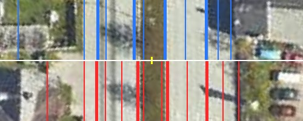
tl37 · Konstantin Türnpu (tallinn)
bez mapy: plocha 10.88* · chodnik 2.2* · krajnice 1.37 · pruh 4.63 · zelen 1.65* · stromorad 3.45* · pruh 3.4 · pruh 3.4 · cyklostezka 2.05* · cyklostezka 2.05*
s mapou Tallinnu: zelen 6.1 · chodnik 2.05 · krajnice 1.52 · pruh 2.64 · pruh 2.64 · zelen 1 · stromorad 3 · zelen 0.9 · pruh 3.25 · pruh 3.25 · cyklostezka 2.64 · chodnik 2.64
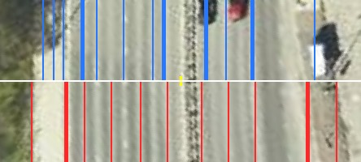
tl38 · Järvevana tee (tallinn)
bez mapy: cyklostezka 1.25* · cyklostezka 1.25* · chodnik 2.25* · krajnice 1.87 · pruh 3.3 · pruh 3.6 · krajnice 1.23 · zelen 5.2* · pruh 2.57 · pruh 3.13 · plocha 7.7*
s mapou Tallinnu: stezka_sdilena 4.2 · krajnice 2.32 · pruh 3.3 · pruh 3.6 · pruh 3.3 · pruh 4.2 · pruh 3.3 · pruh 3.3 · krajnice 6.33* · chodnik 3.6
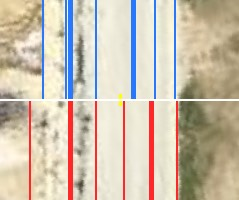
tl39 · Lennusadama (tallinn)
bez mapy: chodnik 2.25* · plocha 0.4* · parkovani 2.65 · pruh 3.65 · plocha 2.25* · chodnik 2*
s mapou Tallinnu: chodnik 3.95 · parkovani 2.65 · pruh 2.77 · pruh 2.77 · chodnik 2.55
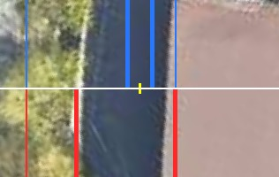
tl40 · (bez názvu) (tallinn)
bez mapy: plocha 11.4* · obsluzna 2.8* · plocha 2.7*
s mapou Tallinnu: zelen 5.6* · obsluzna 11.15